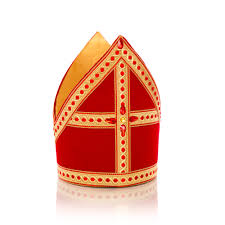
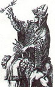

POPE VATICAN
Introduction
Literary
Eamon Duffy explains that the Church was not only fixed on texts, but incorporated popular elements and ancient symbols, including solar or stellar symbols or ritual movements, which may have been influenced by Mithra or other pagan rituals.
Symbols
Mitre

The mitre is a tall hat with two ends resembling arms or bows. It is the liturgical headdress reserved for bishops and certain other prelates of most Christian denominations in the celebration of papal rites. It is usually made of luxurious fabric such as silk and decorated with gold thread or small precious stones. The raised ends symbolize spiritual authority and the bishop's connection with both earth and heaven, i.e., his role as mediator between God and the people.
One of the mystery religions involved the Philistine idol of the fish-man god called Dagon, which was also referred to as the devil. The most famous temples of Dagon were at Gaza (Judges 16:21-30) and Ashdod (1 Samuel 5:3,4; 1 Chronicles 10:10).
Did you know that Catholic bishops are actually high priests of Dagon, the ancient pagan deity of the Philistines? You see, the miter the bishop wears is a replica of the costumes worn by the priests of Dagon. That’s right, the priests of Dagon wore a head dress that looked like the head of a fish with an open mouth, and down their back they wore a long cape that looked like like the skin of a big fish. When you look at a Catholic bishop sideways you can see the open mouthed fish head and his cope looks just like that fish skin they wore! This proves that Catholicism is really just old fashioned devil worshipping paganism right? Wrong
In the Roman Empire, it was worn by the head priest of Cybele (the Magna Mater) or the Great Queen Mother Goddess.
The bishop’s miter developed from the camelaucum; a form of crown worn in the imperial court in Byzantium. There are no pictures of a Catholic bishop wearing what we would recognize as a miter until the eleventh century and then it was a shorter, softer hat which only developed into its present form in the late middle ages….long after the worshippers of Dagon were dead and gone.
Here we see the drawing of the pagan goddess Cybele with the fish head of dagon on her head and the device used to sprinkle the holy water. Cybele was worshipped in Rome and was called the great queen mother goddess. Some scholars say the Basilica of Saint Peter actually stands upon the former site of Cybele's main temple. Also there are some who say the fish head hat of the priests of Enki (a Sumerarian god of the earth and world order) later became the miter of the bishops.

In actuality calling Christians fish, symbolizing them with the fish, and calling the disciples as fishers of men has little or nothing to do with the Jesus of Capernaum. Dagon's son was Baal the god of harvest. The many analogies of the fish and the mentions of harvests, wheat and tare, the seeds along with shining sunlight and water flowing to watering it, are all lures to converge the mystery cults in with the new compiled religion.
Mithraism was a secret religion in the Roman Empire, focusing on the god Mithra, the celestial birth of the sun, and bull sacrifice. Mithraist priests wore special ritual hats and vestments, some of which resembled the Christian mithra in their elevation and decoration.
Scholars have noted that the Christian mithra indirectly borrowed formal elements from ancient ritual symbols (mithraism or pagan rituals), but they were completely reinterpreted in a Christian context.
Cross